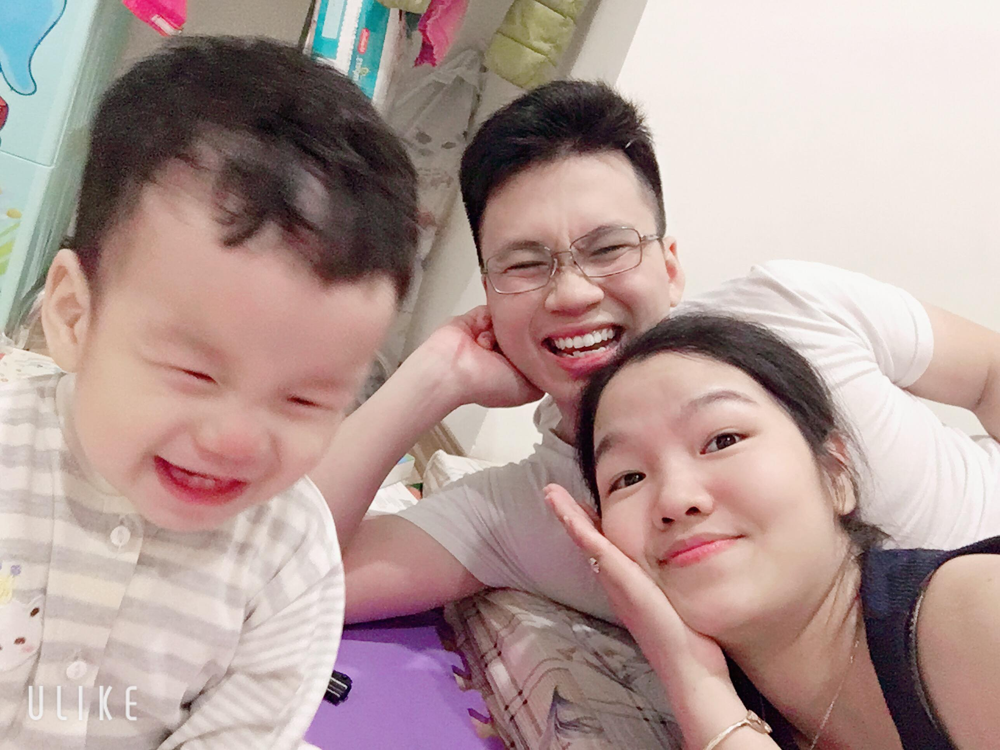

Ken à,
Vậy là chỉ còn mấy ngày nữa là con đã thành thanh niên có tuổi rồi. Nhanh thật, mới ngày nào con còn lọt thỏm trong 2 bàn tay bố mà giờ đã lon ton chạy theo bố mỗi khi bố đi ra ngoài rồi.
Đến giờ bố vẫn nhớ như in ngày hôm đó, cái khoảnh khắc rùng mình đến lặng người khi nghe thấy tiếng khóc chào đời của con vang lên. 1 khoảnh khắc kì diệu mà
chắc chả bao giờ trong đời bố được trải qua một lần nữa.
Hơn 2 giờ đêm hôm đấy, đã là lần thứ 3 mẹ vào với bác sĩ, mỗi lần như thế bố sợ phải nhìn thấy mẹ đau, phải nghe thấy tiếng mẹ la hét nên thay vì đứng ngay gần cái cửa ngăn khu hộ sinh và khu hồi sức sau sinh như mọi người. Bố chỉ dám đứng từ xa mà nghe ngóng.
"Không sao đâu, mọi thứ sẽ ổn thôi... không sao đâu, sẽ ổn thôi" - bố nhẩm đi nhẩm lại câu nói này trong đầu để xua đi những suy nghĩ tiêu cực trong đầu bố. Nhưng hình như càng nói, những ý nghĩ tiêu cực đó vẫn cứ đến trong đầu bố. Bố sợ sẽ có chuyện gì với hai mẹ con, bố dằn vặt, lo lắng rồi sợ hãi, bố chỉ muốn đập đầu vào đâu cho những ý nghĩ đó biến mất.
Rồi bỗng "Eee" - tiếng khóc của con vang lên, trong tíc tắc đó, mọi âm thanh khác như biến mất, bố linh cảm đấy là âm thanh của con trai bố, con đã đến với thế giới của bố mẹ rồi.
Lúc ấy, bố chỉ còn nghe thấy tim bố đập, chân bố như muốn chùn xuống. Nhìn chằm chặp vào cánh cửa ngăn cách 2 khu, bố chạy lại gần đấy, bà nội bảo bố là mẹ đã sinh rồi. Lúc ấy, bố muốn cười, nhưng cũng muốn khóc.. Khóc nhiều hơn, nhưng bố không dám khóc, vẫn phải kiềm lại , phải giữ bình tĩnh để xử lí mọi việc. Đến lúc này những ý nghĩ chết tiệt kia vẫn chưa buông tha cho bố...
Rồi bác sĩ bế con ra với bố. Trộm vía, cảm ơn trời đất, con tròn trịa, nhỏ nhắn nằm gọn trong chiếc khăn bông trên tay bà, miệng con khẽ mấp máy, mắt con chầm chậm nhìn xung quanh. Bế con trên tay, thật sự khó tả cái cảm xúc của bố lúc đó, vẫn cái cảm giác vừa muốn cười, vừa muốn khóc đó...
Sau này bố mới biết cái cảm giác đó là HẠNH PHÚC!!
Một lúc sau, bác sĩ đưa mẹ ra, giờ thì bố chả kìm được nữa, nước mắt bố cứ tư nhiên mà tuôn ra... khi nhìn tay mẹ con chi chít những vết răng cắn...Mẹ mệt, rất mệt... bố biết mẹ rất muốn cười, muốn khóc , muốn ôm ngay con lúc đó nhưng mẹ mệt đành phải nằm im 1 chỗ, mẹ đã chiến đấu hết mình để mang con đến với bố.
Cũng may mà vì thế mẹ cũng chả nhìn thấy bố khóc...
Một năm qua, giờ thì hình ảnh của con đã chiếm trọn trong galery ảnh trong điện thoại của bố và mẹ. Mọi khoảnh khắc, tất cả những lần đầu tiên, bố mẹ đều lưu lại.
Lần đầu tiên con cầm xúc xắc chơi, lần đâu tiên con lật người, rỗi lẫy. Những lần con tập "chống đẩy" để tập bò. Những tiếng "bà bà" nhưng mang rất nhiều ngữ nghĩa.
Rồi những bước đi đầu tiên, bàn tay nhỏ xinh con với lấy tay bố sau những bước đi tập tễnh. Rồi cả thứ âm thanh tuyệt diệu nhất trên thế gian này mà bố mẹ nghe chả
bao giờ biết chán - tiếng cười của con.
Bố từng đọc được 1 câu :... "Cuộc sống đơn giản lắm, cứ nhìn vào mắt bọn trẻ con mà sống". Đúng thật , giờ đây, mỗi lần tan làm bố chỉ nhanh muốn về với con để quên hết đi những nỗi lo cơm áo gạo tiền. Niềm vui của bố mẹ trong một năm qua là được đùa vui với con.
Cảm ơn ông trời đã mang con đến với bố mẹ, đã cho bố mẹ biết thế nào là HẠNH PHÚC. Rồi sau này con lớn lên, có những lúc bố phải nghiêm khắc với con, khiến con phật ý. Nhưng con hãy luôn tin rằng bố luôn luôn muốn bảo vệ, mang đến những điều tốt đẹp đến cho con. Bởi vì con đã mang những điều tuyệt vời nhất đến với bố.
Chúc con sinh nhật vui vẻ, chúc Ken của bố sẽ trở thành một người đàn ông bản lĩnh.
Bố,
Tuấn Anh
